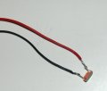
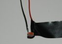
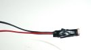
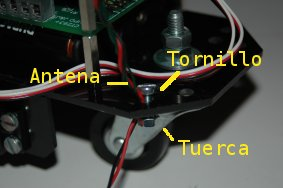
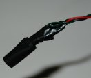

|
Taller de Robótica Básico - Skybot v1.4. - SESION 2. Preparación del sensor de luz |
Vamos a colocar el sensor de luz o LDR en el robot. Lo situaremos a modo de antena en el robot y nos servirá para detectar objetos luminosos. Una LDR proporciona un voltaje dependiente de la intensidad de luz, por lo tanto es un sensor analógico y lo tendremos que manejar usando una entrada analógica de la SKYPIC, situadas en el Puerto A, el mismo que hemos usado para los bumpers.
Materiales
|
 |
Herramientas
|
 |

Como se puede apreciar en la figura, una LDR tiene dos patas. Vamos a soldar el cable rojo a una de ellas y el negro a la otra. No importa la polaridad por lo que podemos poner cada cable en la pata que queramos. Luego protegeremos la soldadura con un poco de cinta aislante y montaremos la LDR en el lugar que queramos, una opción es ponerla como si fuera una antena.
Finalmente conectaremos el cable negro a la entrada GND de la SKY293 y el cable rojo a la entrada AN0. Si necesitamos que la LDR detecte la luz de forma direccional conviene encapsularla de tal forma que sólo podamos recibir la luz por un pequeño orificio.
El proceso se muestra en las siguientes figuras:
| Paso 1) Soldamos el cable rojo a una de las patas | Paso 2) Soldamos el cable negro a la otra pata |
 |
 |
| Paso 3) Protegemos la soldadura | Paso 4) Hacemos la antena |
  |
 |
| Paso 5) Montamos la LDR | Paso 6) Atornillamos la antena |
 |
 |
| Paso 7) Conectamos a la SKY293 | Paso 8) Encapsulamos la antena |
 |
 |
Vamos a utilizar el otro cable de bus que hay en el kit. Lo vamos a conectar por un extremo al Puerto A de la SKYPIC (etiquetado como CT1), y por el otro al Puerto A de la SKY293.
Como hemos dicho antes, una LDR es un sensor analógico, eso
significa que la información que nos dá tiene infinitos
estados, en contra de los sensores digitales que sólo tienen
dos. Esta característica hace que necesitemos un conversor
analógico-digital (ADC Analog to Digital Converter) para poder
trabajar con este tipo de información NO DIGITAL.
El ADC recibe como entrada la señal analógina y
proporciona en su salida una serie de bits proporcionales al valor de
la entrada. El PIC16F876A tiene un conversor AD interno con varias
entradas situadas en el Puerto A.
Nosotros vamos a usar este recurso para leer la información de
la LDR. Tendremos que configurar el ADC interno para que sea capaz de
leer valores analógicos en la entrada AN0 y dejar el resto de
entradas como digitales. De esta forma mantendremos la compatibilidad
con los bumpers.
| SKY293 Puerto A | SKYPIC Puerto A | Descripción |
| AN0 | PA0 | Cable Rojo LDR |
| AN1 | PA1 | --- |
| AN2 | PA2 | --- |
| AN3 | PA3 | --- |
| TO | PA4 | --- |
| AN4 | PA5 | --- |
| Clema alimentacion | ||
| GND | Cable negro LDR | |
| VCC | NC |